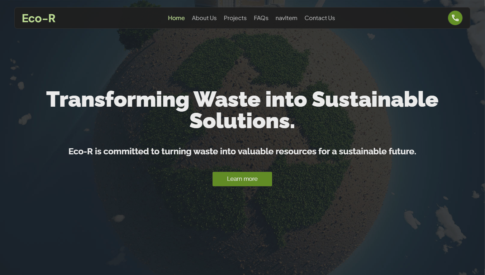
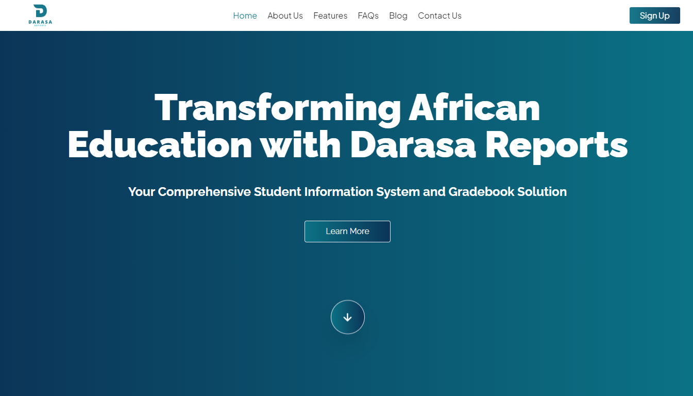

Open to work
Hey, I'm Isaac
Building Innovative
Solutions with Code.
Full-stack developer with a passion for creating
scalable and efficient software
new_releases
Latest Projects

Eco-R
Collaborated on creating the website for Eco-R, which turns waste into sustainable products for a greener planet.

Darasa Reports
An intuitive student information system and gradebook for African schools, designed to simplify student data management and enhance educational efficiency.

GradeOne
An ongoing personal project designed to simplify and enhance learning. GradeOne offers a user-friendly platform with affordable access to a vast collection of educational resources.